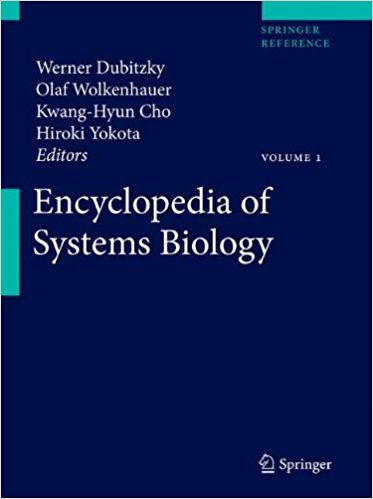

Encyclopedia of Systems Biology
by

The Encyclopedia of Systems Biology is conceived as a comprehensive reference work covering all aspects of systems biology, in particular the investigation of living matter involving a tight coupling of biological experimentation, mathematical modeling and computational analysis and simulation. The main goal of the Encyclopedia is to provide a complete reference of established knowledge in systems biology – a ‘one-stop shop’ for someone seeking information on key concepts of systems biology. As a result, the Encyclopedia comprises a broad range of topics relevant in the context of systems biology. The audience targeted by the Encyclopedia includes researchers, developers, teachers, students and practitioners who are interested or working in the field of systems biology. Keeping in mind the varying needs of the potential readership, we have structured and presented the content in a way that is accessible to readers from wide range of backgrounds. In contrast to encyclopedic online resources, which often rely on the general public to author their content, a key consideration in the development of the Encyclopedia of Systems Biology was to have subject matter experts define the concepts and subjects of systems biology.